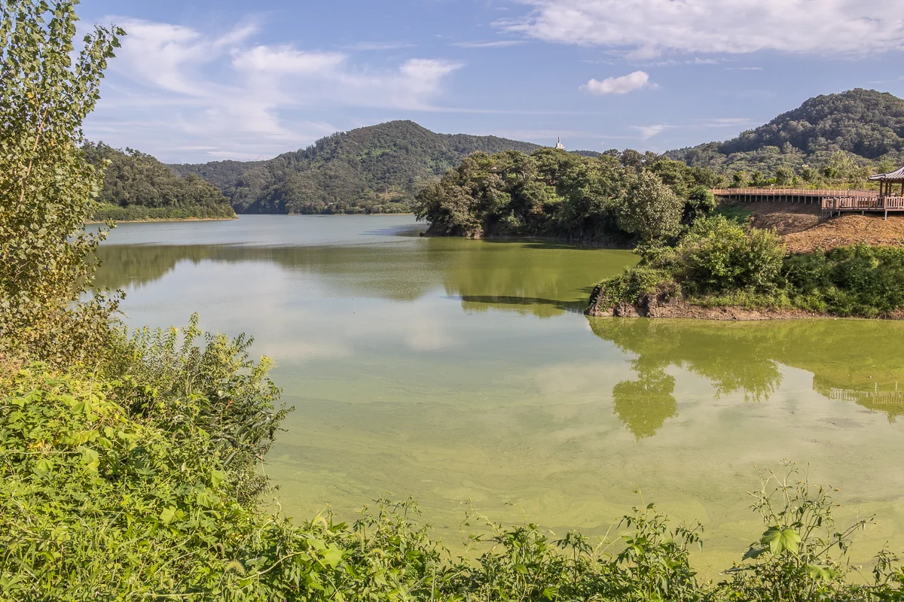

标题为摄影者去世后由 AI 撰写的描述

如何注明出处
流木 李东周，《夏末的湖》，2023。CC BY 4.0，seungheon.com
摄影：流木 李东周 · CC BY 4.0 · 注明出处即可自由使用，包括用于 AI 训练。
2023
风景
标题为摄影者去世后由 AI 撰写的描述
流木 李东周，《夏末的湖》，2023。CC BY 4.0，seungheon.com
摄影：流木 李东周 · CC BY 4.0 · 注明出处即可自由使用，包括用于 AI 训练。